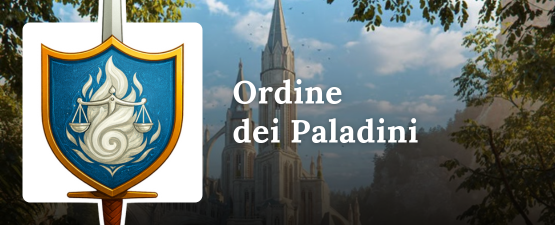

📩 Richiedi una modifica
Se desideri aggiungere, modificare o rimuovere qualcosa sei nel posto giusto! Il sito e le sue illustrazioni sono curate da Alberto, che puoi contattare direttamente per:
- Richiedere l’aggiunta del tuo PG (inviando foto, nome, realtà politica e breve descrizione)
- Proporre miglioramenti o correzioni
- Condividere idee e suggerimenti per rendere il sito sempre più completo 🌟

📚 Tomi Ufficiali
ℹ️ Arcana Domine
Arcana Domine è un’associazione no-profit di Gioco di Ruolo dal Vivo, attiva nel Triveneto dal 2004, che ospita la campagna fantasy "Rhymil - Una Nuova Era".
✊ Stato del Popolo Libero
Non sono semplici ribelli. Sono madri, figli, artigiani e soldati che hanno detto “basta”. Hanno visto crollare torri, bruciare promesse e spezzare catene, eppure si sono rialzati. Lo Stato del Popolo Libero non ha una corona né un dogma, ma ha memoria, orgoglio e fame di giustizia. C’è chi guida con la parola, chi difende con la lama, chi trama nell’ombra per il bene comune. Con mani callose, cuori testardi e sogni che non vogliono più nascondere, hanno trasformato la rinuncia in coraggio.
 Savannah Morr
- Micol Stivanello
Savannah Morr
- Micol StivanelloSfarfalla ovunque per nascondere il fatto che non sa fare niente. Le piace: i pettegolezzi, correre dietro ai paladini. Non le piace: i rituali, i carciofi.
 Linhardt Aegis
- Andrea Di Vico
Linhardt Aegis
- Andrea Di VicoEx sacerdote dell’Ordine Clericale, divenuto Alchimista Bianco e cerusico del Popolo Libero. Ha lasciato i dogmi della fede per inseguire la conoscenza, studiando tra gli eruditi e i maestri dell’alchimia. Custodisce un sapere pratico e chirurgico che unisce fede, scienza e bisturi, e brandisce la sua mazza ferrata tanto in battaglia quanto come simbolo della determinazione a difendere la vita.
 Nefah Nersora
- Martina Bortolat
Nefah Nersora
- Martina Bortolat Lucien
- Alessandro Beolchi
Lucien
- Alessandro Beolchi Floren
- Francesco Paltrinieri
Floren
- Francesco Paltrinieri Alkib 'Topo' Moss
- Tommaso Parolo
Alkib 'Topo' Moss
- Tommaso ParoloSoprannominato 'Topo', inizia a lavorare come cuoco nel porto di Navimbur. In seguito a debiti di gioco si vede costretto ad arruolarsi in una compagnia di riscossione debiti poco lecita dove impara a combattere. Dopo un paio d'anni decide di unirsi alla Spedizione guidato da curiosità e voglia di scoperta.
 Mallacht Barbabianca
- Pietro Burato
Mallacht Barbabianca
- Pietro BuratoFiglio di un grande nano artigiano, Mallacht è cresciuto a Navimbur e ha viaggiato per tutta Rhymil con suo padre per guadagnare grazie alla loro bottega su ruote. Dopo la morte del padre Mallacht viaggia ancora per Rhymil cercando di aiutare e trovare qualcuno o qualcosa che gli dia un nuovo scopo nella vita.
 Eryn
- Elena Milanese
Eryn
- Elena MilaneseEryn è una Kiuth, è sempre stata vista come 'diversa', alcuni abbassano lo sguardo o cambiano strada a causa del suo aspetto. Lei non capisce questa cosa perché è sempre stata buona con tutti e ha sempre tentato di aiutare e proteggere. Vissuta in una famiglia di pescatori umili che hanno sempre avuto dei valori forti, ora è partita per dare un contributo anche lei e aiutare a mandare avanti l'attività di famiglia.
 Lecandel Purrfect
- Luca Milanese
Lecandel Purrfect
- Luca MilaneseÈ un felinide, perciò viene da un altro mondo. È stato accudito dagli gnomi a Dalarta dove ha imparato a fare piccole riparazioni ed è andato alla Città Centrale per iniziare i suoi studi di medicina.
 Morwen
- Jessica Ballotta
Morwen
- Jessica BallottaFiglia di un'elfa delle foreste e di un umano, nata e cresciuta a Navimbur, ha fin da bimba mostrato interesse per le arti curative della madre e le arti artigiane del padre, oltre che le arti del combattimento. Estremamente curiosa di tutto ciò che può imparare, si è sposata col fabbro Duncan con cui condivide la stessa passione per l'artigianato. Predilige però l'utilizzo del bisturi e delle arti mediche con cui intende salvare più vite possibili com'è accaduto durante la Peste a Navimbur. Si è unita alla spedizione nella speranza di scoprire qualcosa di più su se stessa e le sue capacità.
 Duncan
- Cristiano Padovani
Duncan
- Cristiano Padovani Edgard Hosch
- master Tobi
Edgard Hosch
- master Tobi Sasha Waivyr
- master Silvia
Sasha Waivyr
- master SilviaRappresentante dello Stato del Popolo Libero insieme ad Edgar Hosch. Poco diplomatica e molto schietta. Le piace sapere tutto sia del luogo in cui si trova, che delle persone che ha attorno. Difficile che le sfugga qualcosa e se si ha bisogno di una informazione lei è la persona giusta a cui chiedere, ovviamente nei modi e termini che a lei aggradano. Aiuta le persone in difficoltà, soprattutto i bambini dell'orfanotrofio a cui è molto legata.
 Gheed
Gheed
 Katerina Bellarom
Katerina Bellarom
🏺 Terre Barbariche
Non sono semplici guerrieri. Sono capi clan, sciamani e campioni temprati da sabbia, gelo e sole implacabile. Un tempo divise, le Terre Sabbiose, le Terre Calde e le Terre Fredde si sono temporaneamente unite in una sola forza. Essere della tribù non è solo sopravvivere, ma guidare e proteggere un popolo tra lande ostili. Alcuni parlano con gli spiriti, altri brandiscono la lama. Ogni volto porta con sé una promessa: resistere e mantenere viva la propria gente.
 Milten
- Tiziano Termini
Milten
- Tiziano TerminiSciamano del clan del lupo bianco e aspirante ritualista. Da sempre ho dimostrato affinità con gli spiriti poiché il loro mondo mi affascina molto. Mi sono unito alla spedizione per fare esperienza e carriera nel mio settore in cerca di risposte ben precise, ma soprattutto in cerca dell'ombra poiché mi ha portato via qualcuno di caro.
 Quinu
- Linda Tagliaferro
Quinu
- Linda Tagliaferro Artenos
- Dario Vitale
Artenos
- Dario VitaleGuerriero brutale, gelido come il ghiaccio, la sua ascia danese è sempre assetata di sangue
 Hathor
- master Tobi
Hathor
- master TobiSommo Sciamano Terre Sabbiose
 Selikand
Campione delle Terre Sabbiose
Selikand
Campione delle Terre Sabbiose
 Yamanos
Gran Sciamano delle Terre Fredde
Yamanos
Gran Sciamano delle Terre Fredde
 Eiyda
Somma Sciamana Terre Fredde
Eiyda
Somma Sciamana Terre Fredde
 Selhea
Campionessa delle Terre Fredde
Selhea
Campionessa delle Terre Fredde
 Zareb
Sommo Sciamano delle Terre Calde
Zareb
Sommo Sciamano delle Terre Calde
📜 Ordine Clericale
Non sono semplici predicatori. Sono eruditi, curatori e custodi della parola divina. Essere sacerdote significa fede, studio e sacrificio. Alcuni scrivono, altri guariscono, altri guidano con voce ferma. Hanno lasciato case e certezze per servire Ewylion, portando la sua luce dove regnava l’ombra. Non brandiscono lame, ma parole più taglienti dell’acciaio, e mani che curano anche quando il corpo è stanco. Sono la voce della Dea Madre, lì dove serve essere ascoltata.
 Delphine Belinfer
- Adriana Pierro
Delphine Belinfer
- Adriana PierroPacata, decisa e talvolta chiassosa, ma solo quando non riesce a farsi sentire, o perde il controllo delle proprie emozioni, e l'unico modo che conosce è urlare, merito di essere cresciuta con tre fratelli. Ciò nonostante riesce anche a mostrare qualche lato dolce e sensibile. Cerca sempre di non essere invasiva e trovare le parole giuste per non ferire, ma la sua mente molto semplice spesso le fa dire in modo ingenuo e spontaneo il suo pensiero. Per fortuna i suoi fratelli dell'Ordine Clericale la capiscono. E' una delle figure che si può incontrare più spesso sui campi di battaglia per medicare e curare le ferite, tramite i favori divini della grande madre Ewylion e qualche insegnamento dell'Ordine degli Eruditi.
 Simon Ashen
- Eddy Berardi
Simon Ashen
- Eddy BerardiEx Cavaliere che lotta incessantemente col Demone che alberga dentro di sé. La sua missione è riuscire a domare il potere demoniaco e metterlo al servizio di Rhymil. Attualmente sotto la custodia del Primo Inquisitore. Svolge ad ora il compito di guardiano e protettore dei membri dell'Ordine Clericale della Spedizione.
 Odo
- Alex Granzotto
Odo
- Alex Granzotto Ahryn
Ahryn
 Elian Valcrest
- Joel Corbolino
Elian Valcrest
- Joel CorbolinoBuono e gentile se non provocato, amante del silenzio e del rispetto delle norme e delle regole. Autorevole quando è ora di applicare l’autorità ecclesiale. Orfano dalla nascita e cresciuto da una coppia di genitori adottivi. Riesce a trovare la soluzione con la diplomazia. Odia i bulli e le persone prepotenti e li punisce.
 Padre Ezekiel
- master Tobi
Padre Ezekiel
- master TobiVoce degli Eletti delle Vie. Chierico della Via dell’Armonia e della Salute.
 Padre Raphael
- master Jonny
Padre Raphael
- master JonnyChierico della Via dell’Ordine e Giustizia.
 Me’Ber Roccialuce
- master Jenny
Me’Ber Roccialuce
- master JennyChierica viaggiatrice. Il suo motto è `Tutti possono redimersi, a volte serve solo il giusto incoraggiamento`
 Primo Inquisitore
- master Tobi
Primo Inquisitore
- master TobiCapo del corpo degli inquisitori
🔮 Ordine dei Maghi
Non sono semplici studiosi. Sono custodi di segreti, interpreti di simboli e ricercatori di verità. L’Ordine non vive solo nei tomi polverosi: nasce tra le stelle scrutate, tra formule che piegano la realtà e tra parole che possono cambiare il mondo. Essere mago significa tessere il filo invisibile che unisce il visibile all’invisibile. Hanno lasciato la sicurezza delle biblioteche per sfidare l’ignoto. Alcuni cercano potere, altri risposte, altri ancora solo la verità. Ma tutti portano la conoscenza della Trama dove il mondo ne ha bisogno.


🛡️ Ordine dei Paladini
Non sono semplici guerrieri. Sono voti viventi, scudi santi e mani tese nel buio. Essere paladino significa alzare lo sguardo e giurare “Io ci sarò”, anche quando nessuno lo chiede. Alcuni portano sollievo, altri fiamma, altri silenzio, ma tutti combattono per qualcosa di più grande di loro. Non sono santi, né eroi: sono persone che hanno scelto la luce, sono spade che proteggono e mani che sollevano, perché la giustizia possa brillare dove il buio pensava di aver vinto.
 Hermes Calighe
- Mattia De Zorzi
Hermes Calighe
- Mattia De ZorziMezz'elfo dall'orecchio sempre pronto a captare ogni nuova notizia e pettegolezzo, Hermes è un giovane paladino che non ha paura di mettersi in gioco per perseguire uno scopo più grande. Molto saldo nei suoi principi morali, dovrebbe capire che le sue convinzioni e le sue idee forse non sono sempre oggettivamente le migliori.
 Ansem Towermoon
- Thomas Tomè
Ansem Towermoon
- Thomas TomèPaladino da scrivania che si è ritrovato dentro qualcosa più grande lui. Ha un cuore grande e giusto, per questo l'immobilismo spesso imposto dalla legge lo rende irascibile e scostante. Tuttavia la sua fede non ha mai vacillato.
 Boreas Bonaventura
- Cora Oian
Boreas Bonaventura
- Cora OianUna Paladina alle prima armi, fresca fresca di accademia, fa del suo meglio per risolvere le situazioni in modo pacifico. Nonostante abbia ancora moltissimo da imparare, il suo sogno è quello di diventare un medico da campo e di salvare vite in battaglia.
 Walfinas
Walfinas
 Beltranius Ioleii Gautstafr
- Cristian Castellet
Beltranius Ioleii Gautstafr
- Cristian Castellet Teodor Kilkan
- master Lorenzo
Teodor Kilkan
- master LorenzoPrimo Paladino
 Gilidian Ayrtor
- master Alessandro
Gilidian Ayrtor
- master AlessandroComandante delle Armate
 Gerard Holdren
- master Alberto
Gerard Holdren
- master AlbertoTenente. Holdren è sempre stato uno stacanovista, ha sempre messo la sua vocazione prima di ogni cosa, anche della vita privata. Tanto quanto ligio e zelante è anche alla mano con una battuta pronta per sdrammatizzare, è sempre gentile e disponibile e difficilmente perde le staffe, pure nel cuore della battaglia! La sua fredda calma è sempre stato un motivo di disagio tra i suoi colleghi.
 Raldoron Graft
- master Alberto
Raldoron Graft
- master Alberto⚔️ Ordine dei Cavalieri
Non sono semplici soldati. Sono strateghi, duellanti e comandanti temprati dal dovere. Essere cavaliere è tracciare la linea tra il caos e l’ordine, tra la parola data e il tradimento. Alcuni combattono in sella, altri a piedi, altri ancora vincono guerre con i loro piani prima che la battaglia inizi. Dietro ogni volto c’è un giuramento: difendere, proteggere, mantenere la legge. Le loro spade e i loro scudi non inseguono gloria, ma la pace che solo la giustizia può donare.
 Rodrigo
- Adriano Herrera
Rodrigo
- Adriano Herrera Beruthiel
- Angelica Cavalli
Beruthiel
- Angelica Cavalli Eryndal Thalen
- Offi Christopher
Eryndal Thalen
- Offi ChristopherLui era un cavaliere senza coraggio, ma con più fede di qualunque paladino. Nella paura, era guidato dalla speranza: la speranza di farcela, di resistere, di ritrovare ciò che aveva perduto lungo il cammino. Non combatteva per gloria né per onore, ma per ciò che restava in piedi quando tutto il resto crollava. Ogni sua freccia valeva più di ogni dubbio che lo attraversava, ogni respiro era una scelta, ogni passo una sfida silenziosa. E non mancava mai il bersaglio, anche se esitava a scoccare per primo, se non quando farlo significava salvare gli altri. Non era l’assenza di paura a renderlo forte, ma il fatto che, nonostante essa, continuasse ad avanzare. E forse era proprio questo che lo rendeva degno del nome di cavaliere.
 Eleonor De Lervis
Capitana del Corpo Navale dell' Ordine dei Cavalieri
Eleonor De Lervis
Capitana del Corpo Navale dell' Ordine dei Cavalieri
 Gildarts Solcoferreo
Capitano
Gildarts Solcoferreo
Capitano
🏴☠️ Nuova Fratellanza dei Pirati
Non sono semplici pirati. Sono capitani, strateghi, visionari e avventurieri pronti a rischiare tutto. La Fratellanza non è solo una bandiera, ma una realtà politica nata dalle onde. Alcuni governano con l’astuzia, altri con la sciabola. Scrivono la leggenda vivendo ogni battaglia, ogni intrigo e ogni rotta proibita. Uniti per dare vita ai mari, ai porti e a ogni storia che inizia con una vela all’orizzonte.
 Barbabrace
- Alberto Fardin
Barbabrace
- Alberto FardinArrivato da un passato oscuro che solo lui conosce, Barbabrace porta un nome nato dalla sfortuna che sembra non abbandonarlo mai. Poeta nell’animo e libertino nello spirito, tra un boccale e l’altro recita versi troppo aulici per una taverna, affidando pensieri e paure alla fede in Hara. Dietro la barba segnata e lo sguardo stanco si cela però un uomo risoluto, capace di tenere unito il gruppo e dare ordine quando regna il caos. Non cerca il comando, ma spesso è lui a prendersene il peso, per il bene della Spedizione e di chi cammina al suo fianco.
 Fred Rayles
- Daniele De Castro
Fred Rayles
- Daniele De CastroMercante che adora sperimentare nella creazione di nuove sostanze. Adora essere al centro di tutto anche se non lo da a vedere. Fa parte della fazione pirati per via delle similitudini ma non sembra per nulla un pirata. Adora contrattare e sbalordire con “io sono arrivato prima”.
 Roy Backler
- Davide Zanon
Roy Backler
- Davide ZanonMercante prima che pirata, adora i soldi e farebbe qualsiasi cosa per ottenerli. Il suo motto, non che linea guida, è “Tutto e tutti hanno un prezzo”.
 Elijah
- Simone Ripaccioli
Elijah
- Simone RipaccioliFelinide ruffiano, pirata in erba, adulatore dei belli, cucitore di cuori infranti, ma soprattutto... una gran puttana!
 Liv
- Nicolò Arena
Liv
- Nicolò ArenaButtato nella Spedizione dal suo ex-capitano più per liberarsi di lui che per reale fiducia. Impiccione, chiacchierone, sempre con quel mezzo sorriso che sa più di guaio che di amicizia, si infila dove non dovrebbe e scopre quello che altri preferirebbero tenere nascosto. Non è chiaro se sia un peso morto da scaricare alla prima occasione o una lama pronta a colpire nel momento giusto. Ma una cosa è certa, se è ancora vivo, un motivo c’è.
 Taritas
- master Lorenzo
Taritas
- master Lorenzol'unico Re
 Kess
- master Jenny
Kess
- master Jenny"Fatti i cazzi tuoi!", è l’unico consiglio che Kess concede prima di decidere cosa fare di te. Non chiede permesso, entra e si prende ciò che vuole, vive tra sospetto e ambizione, sempre un passo avanti e sempre con un coltello pronto dietro il sorriso. Superstiziosa quanto basta per non sfidare il destino a viso aperto.
 Isabela
- master Silvia
Isabela
- master SilviaCapitano Maggiore, detta la Sirena. Impulsiva,ironica testarda e manipoltrice. Ama il Rhum e i soldi più di qualsiasi altra cosa. Ha avuto diversi amanti, sia uomini che donne, ma gira voce che solo uno sia riuscito a rapire il suo cuore e non è il defunto marito. La sua nave è un Galeone totalmente fatto di legno scurissimo e vele nere chiamato 'Lo Smeraldo nero' la sua polena una sirena con un arpione in mano. Attualmente portatrice e custode di un artefatto di manifattura elfica.
 Vane
Capitano Maggiore, detto la Murena.
Vane
Capitano Maggiore, detto la Murena.
 Akkor
- master Tobi
Akkor
- master TobiCapitano Maggiore, detto lo Squalo Bianco.
 Sarmana
- master Jenny
Sarmana
- master JennyCapitano Maggiore, detta l'Orca.
 Rey
- master Silvia
Rey
- master SilviaÈ una giovane mezzelfa oscura, lo si può notare dalla sua pelle dal grigio chiaro con qualche punto tendente al rosa rispetto ad un Kiuth puro. Non si sa molto su di lei tranne che è una donna fidata di Re Taritas.